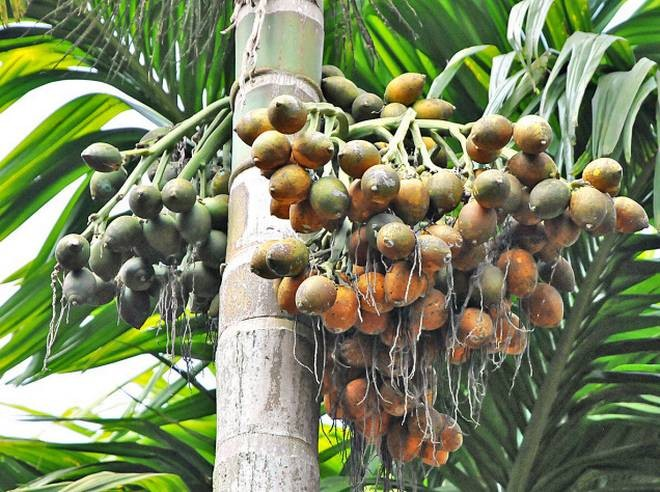
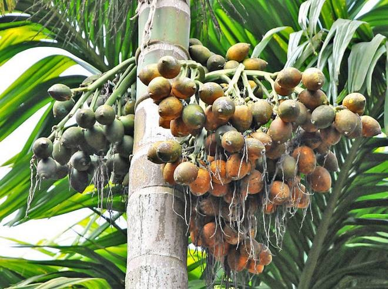

:สรรพคุณของต้นหมาก
1.ผลอ่อนมีรสฝาดหวาน สรรพคุณเป็นยาช่วยทำให้เจริญอาหาร (ผล)
2.เปลือกผลมีสรรพคุณเป็นยาบำรุงธาตุ (เปลือกผล)
3.รากมีรสฝาดเย็น มีสรรพคุณเป็นยาแก้โรคกษัย (ราก)
4.ผลใช้เป็นยาแก้โรเบาหวาน ด้วยการใช้หมากที่กินกับพลูแบบสด 1 ลูก นำมาผ่าเป็น 4 ซีก ต้มกับน้ำ 1 ลิตร จนเดือดหรือประมาณ 10 นาที ใช้ดื่มก่อนอาหารครั้งละครึ่งแก้วเช้า กลางวัน และเย็น เมื่อนำตาลในเลือดลดลงก็ให้นำมาต้มดื่มแบบวันเว้นวันได้ ซึ่งหมากจะมีฝาด จึงช่วยสมานแผลของผู้เป็นโรคเบาหวานให้หายเร็วขึ้นได้อีกด้วย (ผล)
5.ใบมีสรรพคุณเป็นยาแก้ไข้ แก้หวัด (ใบ)
6.รากหมากใช้ผสมกับรากมะพร้าว รากมะกอก รากมะปรางเปรี้ยว รากมะปรางหวาน ลูกกระจับน้ำ ลูกบัวหลวง เกสรบัวหลวง และหัวแห้ว ใช้กินเป็นยาแก้พิษผิดสำแดงไข้ (ราก)
7.รากนำมาต้มกับน้ำเป็นยาแก้พิษร้อนภายใน แก้พิษไข้ร้อน (ราก)[1],[2],[13] หรือจะใช้ใบนำมาต้มกับน้ำกินและอาบเป็นยาแก้ไข้ แก้หวัดก็ได้ (ใบ)
8.หมากมีสรรพคุณในการรักษาโรคมาลาเรีย (ผล)
9.ช่วยขับเหงื่อ (เมล็ด)
10.ดอกเพศผู้ เป็นยาหอม ช่วยแก้กระหายน้ำ (ดอกเพศผู้)
11.ผลมีสรรพคุณช่วยแก้อาการไอ (ผล)
12.ช่วยขับเสมหะ (เนื้อผล)
13.หมากแก่ หรือ หมากสง มีรสฝาดจัด มีสรรพคุณเป็นยาแก้เสมหะในลำไส้เป็นพิษ ช่วยปิดธาตุ และสมานแผล (หมากแก่)
14.ช่วยแก้เมา แก้อาเจียน (ผล)
15.ผลหมากสุกเมื่อนำมาต้มกับน้ำกินแล้วจะช่วยป้องกันอาการของโรคต้อหินหรือความดันภายในลูกตา เพื่อไม่ให้สูงจนผิดปกติได้ (ผล)
16.ตำรายาไทยจะใช้เมล็ดเป็นยารักษาโรคในปาก ช่วยแก้ปากเปื่อย (เมล็ด)[4] ส่วนอีกข้อมูลระบุให้ใช้รากนำมาต้มกับน้ำเดือดใช้อมในขณะยังอุ่นแก้ปากเปื่อย (ราก)
17.รากนำมาต้มเอาน้ำอมช่วยถอนพิษถูกสารปรอทตามฟันได้ดีมาก (ราก)
18.ช่วยทำให้เหงือกและฟันแข็งแรง (เมล็ด)
19.ช่วยบำรุงกระเพาะ (ดอกเพศผู้)
20.เปลือกผลมีรสเผ็ด เป็นยาร้อนเล็กน้อย ออกฤทธิ์ต่อม้ามและกระเพาะลำไส้ ใช้เป็นยาขับลม แก้ท้องอืดท้องเฟ้อ ช่วยขับน้ำในกระเพาะลำไส้ และช่วยในการย่อยอาหาร (เปลือกผล)